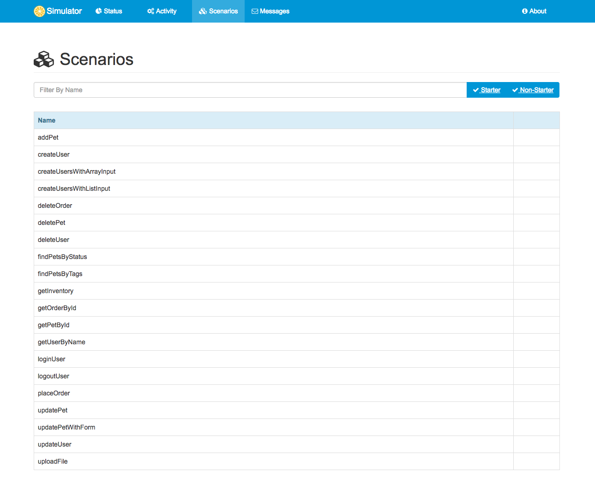
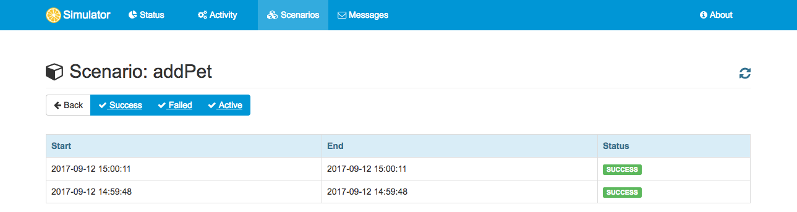

Copyright © 2017 ConSol Software GmbH
Version: 1.0.0

1. Introduction
This is a standalone simulator for different messaging transports such as Http REST, SOAP WebService, JMS, RMI, mail messaging and more.
The simulator provides server APIs for clients and responds with predefined messages according to defined scenarios. The simulator response logic is very powerful and enables us to simulate any kind of server interface.
The simulator uses Spring Boot in combination with the test framework Citrus. You can code simulator scenarios in Java or XML. Each scenario execution on the simulator is stored to an internal database and can be reviewed via web UI in the browser.
Feedback and contributions are highly appreciated!
1.1. Project status
NOTE: This project is considered stable but still under construction!
The simulator application is stable not yet finished. Some features are still under construction. Some aspects are simply not covered yet. Please see the following experimental features.
| WSDL generated scenarios |
Auto generate simulator scenarios from WSDL file |
| Swagger generated scenarios |
Auto generate simulator scenarios from Swagger API file |
| Combined simulator |
Use multiple message transports in one simulator instance |
Following from that we have to deal with some limitations and trade offs until the project emerges (hopefully with the help of the community, keeping our fingers crossed!). However the simulator is usable and all main features are considered to be stable.
1.2. Prerequisites
You may want to check the following prerequisites for using the simulator application.
1.2.1. Java 8
The simulator is a Java application coded in Java 8. Following from that you need at least Java 8 to run it as a Spring Boot web application. Please make sure that you have Java development kit installed and set up. You can verify this with this command in a new terminal window.
java -version1.2.2. Browser
The simulator provides a small web user interface when started. You can access this web UI with your browser. As we are in an early state in this project we do not invest much time in full cross-browser compatibility. We use Chrome and Firefox during development. So the simulator application is most likely to be 100% working on these two browsers. Of course other browsers might work without any limitations, too.
2. Installation
The Citrus simulator is a web application that uses Spring boot and Angular2. The simulator is able to run as Java application on your local machine or as container/pod in Docker, Kubernetes or Openshift.
You can use any build system you like when building the simulator application. Here we show how to setup everything using Gradle and Maven.
2.1. Build with Gradle
Gradle uses groovy build scripts that we have to add first when starting a new simulator project.
buildscript {
repositories {
mavenCentral()
}
dependencies {
classpath("org.springframework.boot:spring-boot-gradle-plugin:1.5.6.RELEASE")
}
}
apply plugin: 'java'
apply plugin: 'eclipse'
apply plugin: 'idea'
apply plugin: 'org.springframework.boot'
jar {
group = "com.consol.citrus.simulator"
baseName = 'citrus-simulator-sample'
version = '1.0.0'
}
repositories {
mavenCentral()
}
sourceCompatibility = 1.8
targetCompatibility = 1.8
dependencies {
compile("org.springframework.boot:spring-boot-starter")
compile("org.springframework.boot:spring-boot-starter-web")
compile("com.consol.citrus:citrus-simulator-starter:1.0.0")
testCompile("junit:junit")
}The above build script will setup the Spring Boot dependencies for you. In addition to that we add the basic citrus-simulator-starter dependency. That’s it for the Gradle build.
We are ready to build and run the simulator now.
Before we do that let’s add a basic Spring Boot main class to our project.
package com.consol.citrus.simulator;
import com.consol.citrus.simulator.http.SimulatorRestAdapter;
import org.springframework.boot.SpringApplication;
import org.springframework.boot.autoconfigure.SpringBootApplication;
@SpringBootApplication
public class Simulator extends SimulatorRestAdapter {
public static void main(String[] args) {
SpringApplication.run(Simulator.class, args);
}
}Also we add an default scenario that is executed for incoming requests.
package com.consol.citrus.simulator;
import com.consol.citrus.http.message.HttpMessage;
import com.consol.citrus.simulator.scenario.*;
import org.springframework.http.HttpStatus;
@Scenario("DEFAULT_SCENARIO")
public class DefaultScenario extends AbstractSimulatorScenario {
@Override
public void run(ScenarioDesigner designer) {
designer.echo("Default scenario executed!");
designer.send()
.message(new HttpMessage("Welcome to the Citrus simulator")
.status(HttpStatus.OK));
}
}The default scenario responds with Http 200 OK.
You can now build and run the simulator application with:
./gradlew build bootRunYou will see the application starting up. Usually you will see some console log output. The web server should start within seconds. Once the application is up and running you can open your browser and point to http://localhost:8080. You will see the very basic simulator user interface. For a more detailed user interface please follow chapter user-interface.
The REST default scenario that we have added is accessible using http://localhost:8080/services/rest/. You will see the default output Welcome to the Citrus simulator
coming from default scenario execution.
That’s it you are ready to use the Citrus simulator now. Next thing would be to understand the concepts and create some simulator scenarios.
2.2. Build with Maven
You can use the simulator in your Maven project. Maven will automatically download all required dependencies and project artifacts for you. The simulator is then executable as a web archive representing the the latest simulator distribution.
See the following sample Maven project POM file that defines the project sources as Spring boot application.
<?xml version="1.0" encoding="UTF-8"?>
<project xmlns="http://maven.apache.org/POM/4.0.0"
xmlns:xsi="http://www.w3.org/2001/XMLSchema-instance"
xsi:schemaLocation="http://maven.apache.org/POM/4.0.0 http://maven.apache.org/xsd/maven-4.0.0.xsd">
<modelVersion>4.0.0</modelVersion>
<groupId>com.consol.citrus</groupId>
<artifactId>citrus-simulator-sample</artifactId>
<name>${project.artifactId}</name>
<version>1.0.0</version>
<properties>
<project.build.sourceEncoding>UTF-8</project.build.sourceEncoding>
<project.reporting.outputEncoding>UTF-8</project.reporting.outputEncoding>
<citrus.simulator.version>1.0.0</citrus.simulator.version>
<spring.boot.version>1.5.6.RELEASE</spring.boot.version>
</properties>
<dependencyManagement>
<dependencies>
<dependency>
<groupId>org.springframework.boot</groupId>
<artifactId>spring-boot-dependencies</artifactId>
<version>${spring.boot.version}</version>
<type>pom</type>
<scope>import</scope>
</dependency>
</dependencies>
</dependencyManagement>
<dependencies>
<dependency>
<groupId>org.springframework.boot</groupId>
<artifactId>spring-boot-starter-web</artifactId>
</dependency>
<dependency>
<groupId>org.springframework.boot</groupId>
<artifactId>spring-boot-starter</artifactId>
</dependency>
<!-- Citrus Simulator -->
<dependency>
<groupId>com.consol.citrus</groupId>
<artifactId>citrus-simulator-starter</artifactId>
<version>${citrus.simulator.version}</version>
</dependency>
</dependencies>
<build>
<plugins>
<plugin>
<artifactId>maven-compiler-plugin</artifactId>
<version>3.5.1</version>
<configuration>
<encoding>${project.build.sourceEncoding}</encoding>
<source>1.8</source>
<target>1.8</target>
</configuration>
</plugin>
<plugin>
<groupId>org.apache.maven.plugins</groupId>
<artifactId>maven-war-plugin</artifactId>
<version>3.0.0</version>
<configuration>
<failOnMissingWebXml>false</failOnMissingWebXml>
</configuration>
</plugin>
<plugin>
<groupId>org.springframework.boot</groupId>
<artifactId>spring-boot-maven-plugin</artifactId>
<version>${spring.boot.version}</version>
<configuration>
<fork>true</fork>
</configuration>
</plugin>
</plugins>
</build>
</project>The above Maven pom file will setup the Spring Boot dependencies for you. In addition to that we add the basic citrus-simulator-starter dependency. We are now finished with the build setup and
we are ready to build and run the simulator.
Before we do that let’s add a basic Spring Boot main class to our project.
package com.consol.citrus.simulator;
import com.consol.citrus.simulator.http.SimulatorRestAdapter;
import org.springframework.boot.SpringApplication;
import org.springframework.boot.autoconfigure.SpringBootApplication;
@SpringBootApplication
public class Simulator extends SimulatorRestAdapter {
public static void main(String[] args) {
SpringApplication.run(Simulator.class, args);
}
}Also we add an default scenario that is executed for incoming requests.
package com.consol.citrus.simulator;
import com.consol.citrus.http.message.HttpMessage;
import com.consol.citrus.simulator.scenario.*;
import org.springframework.http.HttpStatus;
@Scenario("DEFAULT_SCENARIO")
public class DefaultScenario extends AbstractSimulatorScenario {
@Override
public void run(ScenarioDesigner designer) {
designer.echo("Default scenario executed!");
designer.send()
.message(new HttpMessage("Welcome to the Citrus simulator")
.status(HttpStatus.OK));
}
}The default scenario responds with Http 200 OK.
You can now build and run the simulator with Maven from a command line. Use following commands:
mvn clean install spring-boot:runYou will see the application starting up. Usually you will see some console log output. The web server should start within seconds. Once the application is up and running you can open your browser and point to http://localhost:8080. You will see the very basic simulator user interface. For a more detailed user interface please follow chapter user-interface.
The REST default scenario that we have added is accessible using http://localhost:8080/services/rest/. You will see the default output Welcome to the Citrus simulator
coming from default scenario execution.
That’s it you are ready to use the Citrus simulator now. Next thing would be to understand the concepts and create some simulator scenarios.
2.3. Maven archetypes
The easiest way to get started with a new simulator project is to use a Maven archetype that creates a new project for you.
mvn archetype:generate -B -DarchetypeGroupId=com.consol.citrus.archetypes \
-DarchetypeArtifactId=citrus-simulator-archetype-rest \
-DarchetypeVersion=${citrus.simulator.version} \
-DgroupId=com.consol.citrus.simulator \
-DartifactId=citrus-simulator-rest \
-Dversion=1.0.0If you execute the command above the Maven archetype generator will ask you some questions about versions and project names. Once you have completed the generation you get a new Maven project that is ready to use. The project is created in a new folder on your machine. Switch to that folder and continue to build the project.
There are different simulator archetypes available. Please pick the most convenient archetype according to your project purpose.
| citrus-simulator-archetype-rest |
Http REST simulator sample |
| citrus-simulator-archetype-ws |
SOAP web service simulator sample |
| citrus-simulator-archetype-jms |
JMS simulator sample |
| citrus-simulator-archetype-mail |
Mail simulator sample |
| citrus-simulator-archetype-swagger |
Auto generate simulator from Swagger Open API specification (experimental) |
| citrus-simulator-archetype-wsdl |
Auto generate simulator from SOAP WSDL specification (experimental) |
2.4. Development
Once the project build and sources are setup you can start to code some simulator scenarios. The project is a normal Java project that you can work with in your favorite Java IDE. Build tools like Maven and Gradle compile and package the simulator to an executable artifact. Usually this is a Spring boot web archive.
The simulator web application should start within seconds. Once the application is up and running on your local machine you can open your browser and point to http://localhost:8080.
Now everything is set up and you can start to create some simulator scenarios.
That’s it you are ready to use the Citrus simulator.
3. Concepts
The Citrus simulator’s primary focus is to provide a simple means to simulate one or more endpoints (HTTP, JMS, SMTP, etc). Once the simulator is up and running it waits for an incoming request (JSON, SOAP, XML, etc) to arrive on any of its configured endpoints and reacts accordingly. The simulator examines the incoming request and determines which simulator scenario should be executed for handling the request. Typically the selected scenario creates a response message to send back to the calling client.
A scenario mapper is used to help the simulator determine the correct scenario to be executed. Different scenario mappers are supported that use the request header data or payload data to determine the appropriate scenario to run.
A simulator scenario is capable of handling one or more request messages. When executed it receives the request and can return an appropriate response message to the calling client. By defining multiple simulator scenarios the citrus simulator is able to respond to different requests accordingly.
A simulator scenario is composed of one or more actions. For the most trivial scenarios there is generally an action for receiving a request and an action for sending a response. Because the Citrus simulator has access to the underlying Citrus framework functionality you can access a wide range of actions that are available within the Citrus framework and use these when configuring a scenario.
To keep an eye on what the simulator is doing, what requests were received or sent or what scenarios were executed a user interface is provided. In addition to seeing what is going on it is also possible to trigger scenarios manually.
3.1. Simulator application
The simulator is a usual Spring boot application. This means we have a main class that loads the Spring boot application.
import org.springframework.boot.SpringApplication;
import org.springframework.boot.autoconfigure.SpringBootApplication;
@SpringBootApplication
public class Simulator {
public static void main(String[] args) {
SpringApplication.run(Simulator.class, args);
}
}This class is the main entrance for all configuration and customization statements. As we have added the citrus-simulator-starter as dependency in our project auto configuration is enabled for the simulator application. By default REST support is enabled with all configuration needed. You can enable/disable the message transport support for different technologies via application properties.
citrus.simulator.rest.enabled=true
citrus.simulator.jms.enabled=true
citrus.simulator.ws.enabled=true
citrus.simulator.ws.client.enabled=true
citrus.simulator.endpoint.enabled=trueWhen enabled the simulator auto configuration for this specific message transport is activated and all required beans and configuration is loaded at startup.
| citrus.simulator.rest.enabled |
Enables Http REST support |
| citrus.simulator.ws.enabled |
Enables SOAP web services support |
| citrus.simulator.ws.client.enabled |
Enables SOAP web services support |
| citrus.simulator.jms.enabled |
Enables JMS support |
| citrus.simulator.endpoint.enabled |
Enables generic endpoint component support |
You can also combine message transports on the simulator application although this feature is of experimental nature up to now.
3.2. Simulator properties
The simulator is capable of loading configuration from system properties, environment variables and property files. First of all the default Spring boot properties configuration mechanism
is supported. Following from that you can add properties to the application.properties file in your project resources in order to adjust simulator behavior.
citrus.simulator.rest.enabled=true
citrus.simulator.defaultTimeout=10000
citrus.simulator.templatePath=com/company/simulator/templatesThe available simulator properties are grouped in following configuration classes:
| com.consol.citrus.simulator.config.SimulatorConfigurationProperties |
prefix=citrus.simulator |
| com.consol.citrus.simulator.http.SimulatorRestConfigurationProperties |
prefix=citrus.simulator.rest |
| com.consol.citrus.simulator.ws.SimulatorWebServiceConfigurationProperties |
prefix=citrus.simulator.ws |
| com.consol.citrus.simulator.ws.SimulatorWebServiceClientConfigurationProperties |
prefix=citrus.simulator.ws.client |
| com.consol.citrus.simulator.jms.SimulatorJmsConfigurationProperties |
prefix=citrus.simulator.jms |
There are several properties that you can use in order to customize the simulator behavior. These properties are:
| citrus.simulator.templatePath |
Default path to message payload template files. |
| citrus.simulator.defaultScenario |
Default scenario name. |
| citrus.simulator.defaultTimeout |
Timeout when waiting for inbound messages. |
| citrus.simulator.templateValidation |
Enable/disable schema validation. |
| citrus.simulator.exceptionDelay |
Default delay in milliseconds to wait after uncategorized exceptions. |
| citrus.simulator.rest.urlMapping |
Handler adapter url mapping for inbound requests |
| citrus.simulator.ws.servletMapping |
Message dispatcher servlet mapping for inbound SOAP requests |
| citrus.simulator.jms.inboundDestination |
JMS destination name to consume inbound messages from |
| citrus.simulator.jms.replyDestination |
JMS destination name to publish reply messages to |
Please refer to the respective configuration property classes to see what property settings are supported.
3.2.1. System properties
In addition to that default Spring boot property replacement the simulator also supports system property and environment variables. The properties are:
| citrus.simulator.configuration.class |
Java configuration class that is automatically loaded. (default is com.consol.citrus.simulator.SimulatorConfig) |
| citrus.simulator.template.path |
Default path to message payload template files. |
| citrus.simulator.default.scenario |
Default scenario name. |
| citrus.simulator.default.timeout |
Timeout when waiting for inbound messages. |
| citrus.simulator.template.validation |
Enable/disable schema validation. |
| citrus.simulator.exception.delay |
Default delay in milliseconds to wait after uncategorized exceptions. |
| citrus.simulator.rest.url.mapping |
Handler adapter url mapping for inbound requests |
| citrus.simulator.ws.servlet.mapping |
Message dispatcher servlet mapping for inbound SOAP requests |
| citrus.simulator.jms.inbound.destination |
JMS destination name to consume inbound messages from |
| citrus.simulator.jms.reply.destination |
JMS destination name to publish outbound messages to |
You can set these properties as system properties when starting the Spring boot web application or you can add the properties to the default Spring Boot application properties file application.properties that is located as resource file in your project.
The simulator will automatically load these properties during startup and honor this configuration.
3.2.2. Environment variables
Same settings that are editable via system properties are also accessible via environment variables. This is extremely helpful when running the simulator in a containerized infrastructure such as Docker or Kubernetes.
| CITRUS_SIMULATOR_CONFIGURATION_CLASS |
Java configuration class that is automatically loaded. (default is com.consol.citrus.simulator.SimulatorConfig) |
| CITRUS_SIMULATOR_TEMPLATE_PATH |
Default path to message payload template files. |
| CITRUS_SIMULATOR_DEFAULT_SCENARIO |
Default scenario name. |
| CITRUS_SIMULATOR_DEFAULT_TIMEOUT |
Timeout when waiting for inbound messages. |
| CITRUS_SIMULATOR_TEMPLATE_VALIDATION |
Enable/disable schema validation. |
| CITRUS_SIMULATOR_EXCEPTION_DELAY |
Default delay in milliseconds to wait after uncategorized exceptions. |
| CITRUS_SIMULATOR_REST_URL_MAPPING |
Handler adapter url mapping for inbound requests |
| CITRUS_SIMULATOR_WS_SERVLET_MAPPING |
Message dispatcher servlet mapping for inbound SOAP requests |
| CITRUS_SIMULATOR_JMS_INBOUND_DESTINATION |
JMS destination name to consume inbound messages from |
| CITRUS_SIMULATOR_JMS_REPLY_DESTINATION |
JMS destination name to publish outbound messages to |
In case these environment variables are present on your local system the simulator will automatically load these settings during startup and honor the configuration.
3.3. Spring bean configuration
Citrus works with the Spring framework and the simulator is a Spring boot application. Therefore the configuration is done by adding and overwriting Spring beans in the application context. The simulator automatically loads Spring beans defined in following locations:
-
META-INF/citrus-simulator.xml Xml Spring bean configuration file.
-
com.consol.citrus.simulator.SimulatorConfig Java configuration class. You can customize this class by defining the property citrus.simulator.configuration.class
All beans defined in there get automatically loaded to the simulator Spring application context.
3.4. Scenario mapper
The scenario mapper implementation decides how to map incoming request message to simulator scenarios. Each incoming request triggers a predefined scenario that generates the response message for the calling client. The simulator identifies the scenario based on a mapping key that is extracted from the incoming request.
There are multiple ways to identify the simulator scenario from incoming request messages:
| Message-Type |
Each request message type (XML root QName) results in a separate simulator scenario |
| REST request mappings |
Identifies the scenario based on Http method and resource path on server |
| SOAP Action |
Each SOAP action value defines a simulator scenario |
| Message Header |
Any SOAP or Http message header value specifies a new simulator scenario |
| XPath payload |
An XPath expression is evaluated on the message payload to identify the scenario |
| Json payload |
An JsonPath expression is evaluated on the message payload to identify the scenario |
| Content based xpath mapper |
Evaluates Xpath expressions on the request payload and uses the expression result as scenario name |
| Content based jsonPath mapper |
Evaluates JsonPath expressions on the request payload and uses the expression result as scenario name |
| Header value mapper |
Evaluates header name on request and uses header value as scenario name |
| SOAP action mapper |
Evaluates SOAP action header on request and uses the value as scenario name |
| Request mapping annotation mapper |
Uses Spring @RequestMapping annotations on scenarios in order to map incoming requests based on request method and/or request path values |
Once the simulator scenario is identified with the respective mapping key the scenario get loaded and executed. All scenarios perform Citrus test logic in order to provide a proper response messages as a result. This way the simulator is able to perform complex response generating logic with dynamic values and so on.
The mentioned mapping key extraction strategies are implemented in these classes:
| HttpRequestAnnotationScenarioMapper |
Evaluates REST request mappings |
| SoapActionScenarioMapper |
Evaluates the SOAP action header |
| HeaderValueScenarioMapper |
Evaluates any message header |
| ContentBasedXPathScenarioMapper |
Evaluates a XPath expression on the message payload |
| ContentBasedJsonPathScenarioMapper |
Evaluates a JsonPath expression on the message payload |
Of course you can also implement a custom scenario mapper, too. Just implement the interface methods of that API and add the implementation to the simulator configuration as described later on in this document.
3.4.1. Default behavior
The default mapping key logic extracts the message type of incoming requests. This is done by evaluating a Xpath expression on the request payload that uses the root element of the message as the mapping key. Each message type gets its own simulator scenario.
Let’s demonstrate that in a simple example. We know three different message types named successMessage, warningMessage and errorMessage. We create a simulator scenario for each of these message types with respective naming. Given the following incoming requests the simulator will pick the matching scenario for execution.
<successMessage>
<text>This is a success message</text>
</successMessage>
<warningMessage>
<text>This is a warning message</text>
</warningMessage>
<errorMessage>
<text>This is a error message</text>
</errorMessage>The simulator evaluates the root element name and maps the requests to the matching scenario. Each scenario implements different response generating logic so the simulator is able to respond to a successMessage in a different way than for errorMessage types.
3.4.2. Configuration
You can change the mapping key behavior by overwriting te default scenario mapper in your simulator.
@Component
public class SimulatorAdapter extends SimulatorRestAdapter {
@Override
public ScenarioMapper scenarioMapper() {
HeaderValueScenarioMapper scenarioMapper = new HeaderValueScenarioMapper();
scenarioMapper.setHeaderName("X-simulator-scenario");
return scenarioMapper;
}
}With the configuration above we use the HeaderValueScenarioMapper implementation so the header name X-simulator-scenario gets evaluated for each incoming request message. Depending on that header value the matching scenario is executed as a result. The scenario mapper is just a bean in the Spring application context. There is a default implementation but you can overwrite this behavior very easy in the simulator adapter configuration. Read more about how to add simulator adapter configuration classes in configuration chapters rest-config, ws-config or jms-config.
3.5. Simulator scenarios
The simulator provides the response generating logic by defining one to many scenarios that get executed based on the incoming request. The different scenarios on the simulator describe different response messages and stand for individual simulation logic. Each scenario is capable of receiving and validating the incoming request message. Based on that the scenario is in charge of constructing a proper response message.
First of all the scenario gets a name under which mapping strategies can identify the scenario. This name is very important when it comes to mapping incoming requests to scenarios. Besides that the scenario is a normal Java class that implements following interface SimulatorScenario
package com.consol.citrus.simulator.scenario;
public interface SimulatorScenario {
ScenarioEndpoint getScenarioEndpoint();
default void run(ScenarioDesigner designer) {}
default void run(ScenarioRunner runner) {}
}The simulator scenario provides access to the endpoint that has been invoked to start this scenario. In the scenario logic you can receive that request message using this endpoint. Also you can send back a
response using this scenario endpoint. The scenario logic goes to one of the default run methods depending on what designer or runner Java DSL API you want to use. Fortunately there is an abstract default
implementation com.consol.citrus.simulator.scenario.AbstractSimulatorScenario that you can inherit from.
So a typical simulator scenario can look like the following code sample.
@Scenario("Hello")
public class HelloScenario extends AbstractSimulatorScenario {
@Override
public void run(ScenarioDesigner scenario) {
scenario
.receive()
.payload("<Hello xmlns=\"http://citrusframework.org/schemas/hello\">" +
"Say Hello!" +
"</Hello>");
scenario
.send()
.payload("<HelloResponse xmlns=\"http://citrusframework.org/schemas/hello\">" +
"Hi there!" +
"</HelloResponse>");
}
}As you can see we extend from AbstractSimulatorScenario. We just add receive and send logic for generating the response message in the designer run method. The scenario above is annotated with @Scenario for defining a scenario name. There is one single configure method to be implemented. We can use Citrus Java DSL methods in the method body in order to receive the incoming request and send back a proper response message. Of course we can use the full Citrus power here in order to construct different message payloads such as XML, JSON, PLAINTEXT and so on.
So we could also extract dynamic values from the request in order to reuse those in our response message:
@Scenario("Hello")
public class HelloScenario extends AbstractSimulatorScenario {
@Override
public void run(ScenarioDesigner scenario) {
scenario
.receive()
.payload("<Hello xmlns=\"http://citrusframework.org/schemas/hello\">" +
"<user>@ignore@</user>" +
"</Hello>")
.extractFromPayload("/Hello/user", "userName");
scenario
.send()
.payload("<HelloResponse xmlns=\"http://citrusframework.org/schemas/hello\">" +
"<text>Hi there ${userName}!</text>" +
"</HelloResponse>");
}
}In the receive operation the user name value is extracted to a test variable ${userName}. In the response we are able to use this variable in order to greet the user by name. This way we can use the Citrus test power for generating dynamic response messages. Of course this mechanism works for XML, Json and Plaintext payloads.
Now you are ready to write different scenarios that generate different response messages for the calling client. Just remember the scenarios do get unique names that match a value that is evaluated through the scenario mapper. With this mechanism we are able to code different simulator scenarios for different incoming request messages. Also with the Citrus send and receive operations we are able to handle messages of different transport types.
Read more about special message transport support in chapters rest-support, web-service-support, jms-support, endpoint-support.
3.6. Intermediate Messages
The simulator starts a new scenario instance for each incoming request based on the defined scenario mapping. Sometimes a running scenario instance needs to receive another incoming request. The simulator has to handle things in a different way then because the incoming request should not trigger an new scenario instance but forward that request to the running scenario.
This mechanism is called intermediate message handling in scenarios. The scenario can activate the message correlation for a certain request. The simulator will always check all running scenarios for matching intermediate message correlations before starting a new scenario. This mechanism enables us to receive further incoming request within the same scenario instance.
Let us clarify this with a simple example.
@Scenario("GoodNight")
public class GoodNightScenario extends AbstractSimulatorScenario {
@Override
public void run(ScenarioDesigner scenario) {
scenario
.receive()
.payload("<GoodNight xmlns=\"http://citrusframework.org/schemas/hello\">" +
"Go to sleep!" +
"</GoodNight>")
.extractFromHeader("X-CorrelationId", "correlationId");
scenario.correlation().start()
.onHeader("X-CorrelationId", "${correlationId}");
scenario
.send()
.payload("<GoodNightResponse xmlns=\"http://citrusframework.org/schemas/hello\">" +
"Good Night!" +
"</GoodNightResponse>");
scenario
.receive()
.payload("<IntermediateRequest>In between!</IntermediateRequest>");
scenario
.send()
.payload("<IntermediateResponse>In between!</IntermediateResponse>");
}
}The scenario above starts a new correlation on the header entry "X-CorrelationId" and the variable value ${correlationId} that has been extracted from first request message. Now the scenario is able to receive further incoming request messages with the correlation identifier. This makes sure that no other running scenario is catching this message before. The scenario is provided with that specific message first.
This is how a scenario instance is able to receive more than one single incoming request. The message correlation is able to run on header values as well as based on XPath expressions evaluated within the message payload.
@Scenario("FaxCancelled")
public class FaxCancelledScenario extends AbstractFaxScenario {
public static final String ROOT_ELEMENT_XPATH = "string:local-name(/*)";
public static final String REFERENCE_ID_XPATH = "//fax:referenceId";
@Override
public void run(ScenarioDesigner scenario) {
scenario
.receive()
.xpath(ROOT_ELEMENT_XPATH, "SendFaxMessage")
.extractFromPayload(REFERENCE_ID_XPATH, "referenceId");
scenario.correlation().start()
.onPayload(REFERENCE_ID_XPATH, "${referenceId}");
scenario
.send(getStatusEndpoint())
.payload(
getPayloadHelper().generateFaxStatusMessage("${referenceId}",
FaxStatusEnumType.QUEUED,
"The fax message has been queued and will be send shortly"),
getPayloadHelper().getMarshaller()
);
scenario
.receive()
.xpath(ROOT_ELEMENT_XPATH, "CancelFaxMessage")
.xpath(REFERENCE_ID_XPATH, "${referenceId}");
scenario
.send(getStatusEndpoint())
.payload(
getPayloadHelper().generateFaxStatusMessage("${referenceId}",
FaxStatusEnumType.CANCELLED,
"The fax message has been cancelled"),
getPayloadHelper().getMarshaller()
);
}
}The sample above uses XPath expressions to start a new correlation within the scenario. This makes sure that the second incoming request CancelFaxMessage is forwarded to this very same scenario.
With intermediate message handling we are able to create more complex scenarios that require multiple request/response messages. The message correlation makes sure that the needed requests are handled within the same scenarion and other parallel running scenarios are not affected.
4. REST support
The simulator is able to provide Http REST APIs as a server. Clients can call the simulator on request paths using methods such as Http GET, POST, PUT, DELETE and so on.
The generic rest support is activated by setting the property citrus.simulator.rest.enabled=true. You can do so in the basic application.properties
file or via system property or environment variable setting.
import org.springframework.boot.SpringApplication;
import org.springframework.boot.autoconfigure.SpringBootApplication;
@SpringBootApplication
public class Simulator {
public static void main(String[] args) {
SpringApplication.run(Simulator.class, args);
}
}The citrus.simulator.rest.enabled property performs some auto configuration steps and loads required beans for the Spring application context in the Spring boot application.
After that we are ready to handle incoming REST API calls on the simulator.
4.1. Configuration
Once the REST support is enabled on the simulator we have different configuration options. The most comfortable way is to add a SimulatorRestAdapter implementation to the classpath. The adapter provides several configuration methods.
public abstract class SimulatorRestAdapter implements SimulatorRestConfigurer {
@Override
public ScenarioMapper scenarioMapper() {
return new HttpRequestAnnotationScenarioMapper();
}
@Override
public HandlerInterceptor[] interceptors() {
return new HandlerInterceptor[] { new LoggingHandlerInterceptor() };
}
@Override
public String urlMapping() {
return "/services/rest/**";
}
}The adapter defines methods that configure the simulator REST handling. For instance we can add another scenario mapper implementation or add handler interceptors to the REST API call handling.
Note The REST support is using the default scenario mapper HttpRequestAnnotationScenarioMapper that searches for @RequestMapping annotations on scenario classes. Read more about that in rest-request-mapping.
The urlMapping defines how clients can access the simulator REST API. Assuming the Spring boot simulator application is running on port 8080 the REST API would be accessible on this URI:
http://localhhost:8080/services/rest/*The clients can send GET, POST, DELETE and other calls to that endpoint URI then. The simulator will respond with respective responses based on the called scenario.
You can simply extend the adapter in a custom class for adding customizations.
@Component
public class MySimulatorRestAdapter extends SimulatorRestAdapter {
@Override
public String urlMapping() {
return "/my-rest-service/**";
}
}As you can see the class is annotated with @Component annotation. This is because the adapter should be recognized by Spring in order to overwrite the default REST adapter behavior. The custom adapter just overwrites the urlMapping method so the REST simulator API will be accessible for clients under this endpoint URI:
http://localhhost:8080/my-rest-service/*This is the simplest way to customize the simulator REST support. We can also use the adapter extension directly on the Spring boot main application class:
import com.consol.citrus.simulator.http.SimulatorRestAdapter;
import org.springframework.boot.SpringApplication;
import org.springframework.boot.autoconfigure.SpringBootApplication;
@SpringBootApplication
public class Simulator extends SimulatorRestAdapter {
@Override
public String urlMapping() {
return "/my-rest-service/**";
}
@Override
public ScenarioMapper scenarioMapper() {
HeaderValueScenarioMapper scenarioMapper = new HeaderValueScenarioMapper();
scenarioMapper.setHeaderName("X-simulator-scenario");
return scenarioMapper;
}
public static void main(String[] args) {
SpringApplication.run(Simulator.class, args);
}
}4.2. Advanced customizations
For a more advanced configuration option we can extend the SimulatorRestSupport implementation.
import com.consol.citrus.simulator.http.SimulatorRestAutoConfiguration;
import org.springframework.boot.SpringApplication;
import org.springframework.boot.autoconfigure.SpringBootApplication;
@SpringBootApplication
public class Simulator extends SimulatorRestAutoConfiguration {
@Override
protected String getUrlMapping() {
return "/my-rest-service/**";
}
@Override
public FilterRegistrationBean requestCachingFilter() {
FilterRegistrationBean filterRegistrationBean = new FilterRegistrationBean(new RequestCachingServletFilter());
String urlMapping = getUrlMapping();
if (urlMapping.endsWith("**")) {
urlMapping = urlMapping.substring(0, urlMapping.length() - 1);
}
filterRegistrationBean.setUrlPatterns(Collections.singleton(urlMapping));
return filterRegistrationBean;
}
@Override
public HandlerMapping handlerMapping(ApplicationContext applicationContext) {
SimpleUrlHandlerMapping handlerMapping = new SimpleUrlHandlerMapping();
handlerMapping.setOrder(Ordered.HIGHEST_PRECEDENCE);
handlerMapping.setAlwaysUseFullPath(true);
Map<String, Object> mappings = new HashMap<>();
mappings.put(getUrlMapping(), getRestController(applicationContext));
handlerMapping.setUrlMap(mappings);
handlerMapping.setInterceptors(interceptors());
return handlerMapping;
}
public static void main(String[] args) {
SpringApplication.run(Simulator.class, args);
}
}With that configuration option we can overwrite REST support auto configuration features on the simulator such as the requestCachingFilter or the handlerMapping. We extend the SimulatorRestAutoConfiguration implementation directly.
4.3. Request mapping
By default the simulator will map incoming requests to scenarios using so called mapping keys that are evaluated on the incoming request. When using REST support on the simulator we can also use @RequestMapping annotations on scenarios in order to map incoming requests.
This looks like follows:
@Scenario("Hello")
@RequestMapping(value = "/services/rest/simulator/hello", method = RequestMethod.POST)
public class HelloScenario extends AbstractSimulatorScenario {
@Override
public void run(ScenarioDesigner scenario) {
scenario
.receive()
.payload("<Hello xmlns=\"http://citrusframework.org/schemas/hello\">" +
"Say Hello!" +
"</Hello>");
scenario
.send()
.payload("<HelloResponse xmlns=\"http://citrusframework.org/schemas/hello\">" +
"Hi there!" +
"</HelloResponse>");
}
}As you can see the example above uses @RequestMapping annotation in addition to the @Scenario annotation. All requests on the request path /services/rest/simulator/hello of method POST will be mapped to the scenario. With this strategy the simulator is able to map requests based on methods, request paths and query parameters.
The mapping strategy requires a special scenario mapper implementation that is used by default. This scenario mapper automatically scans for scenarios with @RequestMapping annotations. The HttpRequestAnnotationScenarioMapper is active by default when enabling REST support on the simulator. Of course you can use traditional scenario mappers, too when using REST. So in case you need to apply different mapping strategies you can overwrite the scenario mapper implementation in the configuration adapter.
4.4. Http responses
As Http is a synchronous messaging transport by its nature we can provide response messages to the calling client. In Http REST APIs this should include some Http status code. You can specify the Http status code very easy when using the Citrus Java DSL methods as shown in the next example.
@Scenario("Hello")
@RequestMapping(value = "/services/rest/simulator/hello", method = RequestMethod.POST)
public class HelloScenario extends AbstractSimulatorScenario {
@Override
public void run(ScenarioDesigner scenario) {
scenario
.http()
.receive()
.post()
.payload("<Hello xmlns=\"http://citrusframework.org/schemas/hello\">" +
"Say Hello!" +
"</Hello>");
scenario
.http()
.send()
.response(HttpStatus.OK)
.payload("<HelloResponse xmlns=\"http://citrusframework.org/schemas/hello\">" +
"Hi there!" +
"</HelloResponse>");
}
}The Http Java DSL extension in Citrus provides easy access to Http related identities such as request methods, query parameters and status codes. Please see the official Citrus documentation for more details how to use this Http specific Java fluent API.
4.5. Swagger support
The simulator application is able to read Swagger Open API V3.0 specifications for auto generating simulator scenarios for each operation. The Open API specification defines available REST request paths, supported methods (GET, POST, PUT, DELETE, …) and their outcome when clients call that API operations. The simulator generates basic scenarios for these specification information.
See the following sample how to do that:
@SpringBootApplication
public class Simulator extends SimulatorRestAdapter {
public static void main(String[] args) {
SpringApplication.run(Simulator.class, args);
}
@Override
public ScenarioMapper scenarioMapper() {
return new HttpRequestPathScenarioMapper();
}
@Override
public String urlMapping(SimulatorRestConfigurationProperties simulatorRestConfiguration) {
return "/petstore/v2/**";
}
@Override
public EndpointAdapter fallbackEndpointAdapter() {
return new StaticEndpointAdapter() {
@Override
protected Message handleMessageInternal(Message message) {
return new HttpMessage().status(HttpStatus.NOT_FOUND);
}
};
}
@Bean
public static HttpScenarioGenerator scenarioGenerator() {
HttpScenarioGenerator generator = new HttpScenarioGenerator(new ClassPathResource("swagger/petstore-api.json"));
generator.setContextPath("/petstore");
return generator;
}
}The listing above adds a HttpScenarioGenerator as Spring bean to the simulator application. The generator receives the swagger api file location swagger/petstore-api.json and the
context path for this API. In addition to that we need to set a special scenario mapper implementation HttpRequestPathScenarioMapper that is aware of generated REST scenarios.
Also we set a custom fallback endpoint adapter. This one is used when no scenario matches the incoming request or when the scenario itself did not produce a proper response because of some validation error.
On startup the generator dynamically generates a scenario for each operation defined in that swagger api file. You can review all generated scenarios in the user interface.
Let’s have a look at a sample operation in that petstore swagger api file:
"/pet/findByStatus": {
"get": {
"tags": [
"pet"
],
"summary": "Finds Pets by status",
"description": "Multiple status values can be provided with comma separated strings",
"operationId": "findPetsByStatus",
"produces": [
"application/xml",
"application/json"
],
"parameters": [
{
"name": "status",
"in": "query",
"description": "Status values that need to be considered for filter",
"required": true,
"type": "array",
"items": {
"type": "string",
"enum": [
"available",
"pending",
"sold"
],
"default": "available"
},
"collectionFormat": "multi"
}
],
"responses": {
"200": {
"description": "successful operation",
"schema": {
"type": "array",
"items": {
"$ref": "#/definitions/Pet"
}
}
},
"400": {
"description": "Invalid status value"
}
},
"security": [
{
"petstore_auth": [
"write:pets",
"read:pets"
]
}
]
}
}The REST operation above defines a GET method on /pet/findByStatus. The required query parameter status is defined to filter the returned list of pets. As a response the API defines 200 OK with an array of Pet objects. In addition to that 400 response is defined when the status parameter is not within its restriction enumeration available, pending, sold.
IMPORTANT: The simulator will always generate the success case exclusively. Here this would be the 200 OK response. Other response variations are not generated up to now!
The generated scenario for this operation verifies that the request is using GET method on request path /pet/findByStatus. Also the scenario verifies the existence of the status query parameter and that the value is within the enumeration boundaries.
Only in case these verification steps are performed successfully the simulator scenario generates a proper response 200 OK that contains a dynamic array of pet objects.
Let’s have a look at the communication on that scenario:
GET http://localhost:8080/petstore/v2/pet/findByStatus?status=pending
Accept:application/json
Content-Type:text/plain;charset=UTF-8
Content-Length:0HTTP/1.1 200
X-Application-Context:application
Content-Type:application/json
Content-Length:193
Date:Wed, 13 Sep 2017 08:13:52 GMT
[{"id": 5243024128,"category": {"id": 5032916791,"name": "hneBENfFDq"},"name": "JjZhcsvSRA","photoUrls": ["GwSVIBOhsi"],"tags": [{"id": 8074462757,"name": "DYwotNekKc"}],"status": "available"}]The request did match all verification steps on the simulator for this operation. Following from that we receive a generated response message with some sample data as array of pet objects. The simulator is able to generate dynamic identifier such as id, category and name values. According to the field type the simulator generates dynamic number of string values. When there is a enumeration value restriction as seen in status the simulator generates a dynamic enumeration value.
This is how we always get a proper generated response from the simulator API. The petstore swagger Open API specification defines the returned objects and how to validate the incoming requests.
Just in case we sent an invalid request according to the Open API specification we do not get a proper response.
GET http://localhost:8080/petstore/v2/pet/findByStatus
Accept:application/json
Content-Type:text/plain;charset=UTF-8
Content-Length:0HTTP/1.1 404
X-Application-Context:application
Content-Type:text/plain;charset=UTF-8
Content-Length:0
Date:Wed, 13 Sep 2017 08:42:56 GMTThe sample request above is missing the required status query parameter on the findByStatus operation. As a result we get a 404 NOT_FOUND response from the fallback endpoint adapter as the scenario did not complete because of validation errors. You will see the failed scenario activity with proper error message on that missing status parameter in the user interface then.
4.5.1. Swagger system properties
The simulator Swagger API auto generate scenario feature can also be activated using pure property settings on the Spring boot application. Instead of adding the Spring bean HttpScenarioGenerator in your
simulator configuration you could just set the following properties on the simulator application:
# Enable swagger api support
citrus.simulator.rest.swagger.enabled=true
citrus.simulator.rest.swagger.api=classpath:swagger/petstore-api.json
citrus.simulator.rest.swagger.contextPath=/petstoreOf course you can also use environment variables.
CITRUS_SIMULATOR_REST_SWAGGER_ENABLED=true
CITRUS_SIMULATOR_REST_SWAGGER_API=classpath:swagger/petstore-api.json
CITRUS_SIMULATOR_REST_SWAGGER_CONTEXT_PATH=/petstoreWe just add the api file location and everything else is auto configuration done in the simulator application.
4.5.2. Data dictionaries
Data dictionaries enable us to centralize data manipulation via JsonPath expressions in order to have more dynamic message values in generated request and response message. When a scenario receives and sends messages the data dictionary is asked for available translations for message elements. This means that data dictionaries are able to manipulate message content before they are processed.
The auto generated scenario references both inbound and outbound data dictionaries. We simply need to enable those in the Spring boot application.properties file:
citrus.simulator.inbound.json.dictionary.enabled=true
citrus.simulator.inboundJsonDictionary=classpath:dictionary/inbound_mappings.properties
citrus.simulator.outbound.json.dictionary.enabled=true
citrus.simulator.outboundJsonDictionary=classpath:dictionary/outbound_mappings.propertiesAs you can see you have the possibility to define mapping files that map JsonPath expression evaluation with pre defined values in the dictionary:
Now we have added some mapping files for inbound and outbound dictionaries. The mapping file can look like this:
$.category.name=@assertThat(anyOf(is(dog),is(cat)))@
$.status=@matches(available|pending|sold|placed)@
$.quantity=@greaterThan(0)@$.category.name=citrus:randomEnumValue('dog', 'cat')
$.name=citrus:randomEnumValue('hasso', 'cutie', 'fluffy')The inbound and outbound mapping files defines several JsonPath expressions that should set predefined values before incoming and outgoing messages are validated respectively sent out. As you can see we can use Citrus validation matchers and functions in order to get more complex value generation.
5. Web Service support
The simulator is able to handle SOAP Web Service calls as a server.
The generic SOAP web service support is activated by setting the property citrus.simulator.ws.enabled=true. You can do so in the basic application.properties
file or via system property or environment variable setting.
import org.springframework.boot.SpringApplication;
import org.springframework.boot.autoconfigure.SpringBootApplication;
@SpringBootApplication
public class Simulator {
public static void main(String[] args) {
SpringApplication.run(Simulator.class, args);
}
}The citrus.simulator.ws.enabled property performs some auto configuration steps and loads required beans for the Spring application context in the Spring boot application.
As SOAP web service support is not included by default in the simulator we need to add some Citrus dependencies to our project. In Maven we simply add the following dependency to the project POM.
<!-- Citrus web service support -->
<dependency>
<groupId>com.consol.citrus</groupId>
<artifactId>citrus-ws</artifactId>
<version>${citrus.version}</version>
</dependency>After that we are ready to handle incoming SOAP Web Service calls on the simulator. When SOAP web service handling is enabled on the simulator the SOAP envelope handling is done automatically. This means we do not have to deal with that SOAP envelope in the scenario receive and send operations. Also the scenario receive operation has access to the SOAP action of the incoming request call. Besides that we can also return a SOAP fault message as scenario outcome.
Let’s move on with having a look at the SOAP related configuration options as described in the following sections.
5.1. Configuration
Once the SOAP support is enabled on the simulator we have different configuration options. The most comfortable way is to add a SimulatorWebServiceAdapter implementation to the classpath. The adapter provides several configuration methods.
public abstract class SimulatorWebServiceAdapter implements SimulatorWebServiceConfigurer {
@Override
public String servletMapping() {
return "/services/ws/*";
}
@Override
public ScenarioMapper scenarioMapper() {
return new ContentBasedXPathScenarioMapper().addXPathExpression("local-name(/*)");
}
@Override
public EndpointInterceptor[] interceptors() {
return new EndpointInterceptor[] { new LoggingEndpointInterceptor() };
}
}The adapter defines methods that configure the simulator SOAP message handling. For instance we can add another mapping key extractor implementation or add endpoint interceptors to the SOAP service call handling.
The servletMapping defines how clients can access the simulator SOAP service. Assuming the Spring boot simulator application is running on port 8080 the SOAP service would be accessible on this URI:
http://localhhost:8080/services/ws/*The clients can send SOAP calls to that endpoint URI then. The simulator will respond with respective SOAP responses based on the called scenario.
You can simply extend the adapter in a custom class for adding customizations.
@Component
public class MySimulatorWebServiceAdapter extends SimulatorWebServiceAdapter {
@Override
public String servletMapping() {
return "/my-soap-service/**";
}
}As you can see the class is annotated with @Component annotation. This is because the adapter should be recognized by Spring in order to overwrite the default SOAP adapter behavior. The custom adapter just overwrites the servletMapping method so the SOAP simulator API will be accessible for clients under this endpoint URI:
http://localhhost:8080/my-soap-service/*This is the simplest way to customize the simulator SOAP support. We can also use the adapter extension directly on the Spring boot main application class:
import com.consol.citrus.simulator.ws.SimulatorWebServiceAdapter;
import org.springframework.boot.SpringApplication;
import org.springframework.boot.autoconfigure.SpringBootApplication;
@SpringBootApplication
public class Simulator extends SimulatorWebServiceAdapter {
@Override
public String servletMapping() {
return "/my-soap-service/**";
}
@Override
public ScenarioMapper scenarioMapper() {
return new SoapActionScenarioMapper();
}
public static void main(String[] args) {
SpringApplication.run(Simulator.class, args);
}
}5.2. Advanced customizations
For a more advanced configuration option we can extend the SimulatorWebServiceSupport implementation.
import com.consol.citrus.simulator.ws.SimulatorWebServiceAutoConfiguration;
import org.springframework.boot.SpringApplication;
import org.springframework.boot.autoconfigure.SpringBootApplication;
@SpringBootApplication
public class Simulator extends SimulatorWebServiceAutoConfiguration {
@Override
protected String getServletMapping() {
return "/my-soap-service/**";
}
@Bean
public ServletRegistrationBean messageDispatcherServlet(ApplicationContext applicationContext) {
MessageDispatcherServlet servlet = new MessageDispatcherServlet();
servlet.setApplicationContext(applicationContext);
servlet.setTransformWsdlLocations(true);
return new ServletRegistrationBean(servlet, getDispatcherServletMapping());
}
public static void main(String[] args) {
SpringApplication.run(Simulator.class, args);
}
}With that configuration option we can overwrite SOAP support auto configuration features on the simulator such as the messageDispatcherServlet. We extend the SimulatorWebServiceAutoConfiguration implementation directly.
5.3. SOAP response
When using Http SOAP services we may want to respond to the calling client with a synchronous SOAP response message. As the SOAP communication is automatically handled within the simulator we can simply send back a response message in the scenario.
@Scenario("Hello")
public class HelloScenario extends AbstractSimulatorScenario {
@Override
public void run(ScenarioDesigner scenario) {
scenario
.soap()
.receive()
.payload("<Hello xmlns=\"http://citrusframework.org/schemas/hello\">" +
"Say Hello!" +
"</Hello>")
.soapAction("Hello");
scenario
.soap()
.send()
.payload("<HelloResponse xmlns=\"http://citrusframework.org/schemas/hello\">" +
"Hi there!" +
"</HelloResponse>");
}
}As you can see the Citrus Java DSL provides special SOAP related methods that specify the SOAP request and response data. Once again the SOAP envelope is automatically handled so we do not have to add this here. The receive operation is able to verify the SOAP action header value. In addition to that we are able to specify the synchronous SOAP response message.
When using SOAP message protocols we may need to send SOAP faults as response message. This is handled in the next section.
5.4. SOAP faults
The simulator is in charge of sending proper response messages to the calling client. When using SOAP we might also want to send back a SOAP fault message. Therefore the default Web Service scenario implementation also provides fault responses as scenario result.
@Scenario("GoodNight")
public class GoodNightScenario extends AbstractSimulatorScenario {
@Override
protected void configure() {
scenario
.receive()
.payload("<GoodNight xmlns=\"http://citrusframework.org/schemas/hello\">" +
"Go to sleep!" +
"</GoodNight>")
.header(SoapMessageHeaders.SOAP_ACTION, "GoodNight");
scenario
.sendFault()
.faultCode("{http://citrusframework.org}CITRUS:SIM-1001")
.faultString("No sleep for me!");
}
}The example above shows a simple fault generating SOAP scenario. The base class SimulatorWebServiceScenario provides the sendFault() method in order to create proper SOAP fault messages. The simulator automatically add SOAP envelope and SOAP fault message details for you. So we can decide wheather to provide a success response or SOAP fault.
5.5. WSDL support
The simulator is able to read your WSDL web service specifications for auto generating simulator scenarios. The WSDL defines multiple operations with request and response message data. The simulator reads the WSDL information and generates basic scenarios for these operations.
See the following sample how to do that:
@SpringBootApplication
public class Simulator extends SimulatorWebServiceAdapter {
public static void main(String[] args) {
SpringApplication.run(Simulator.class, args);
}
@Override
public String servletMapping(SimulatorWebServiceConfigurationProperties simulatorWebServiceConfiguration) {
return "/services/ws/HelloService/v1/*";
}
@Override
public EndpointAdapter fallbackEndpointAdapter() {
return new StaticEndpointAdapter() {
@Override
protected Message handleMessageInternal(Message message) {
return new SoapFault()
.faultActor("SERVER")
.faultCode("{http://localhost:8080/HelloService/v1}HELLO:ERROR-1001")
.faultString("Internal server error");
}
};
}
@Bean
public static WsdlScenarioGenerator scenarioGenerator() {
WsdlScenarioGenerator generator = new WsdlScenarioGenerator(new ClassPathResource("xsd/Hello.wsdl"));
return generator;
}
}The listing above uses a WsdlScenarioGenerator as Spring bean. The generator requires the WSDL file location xsd/Hello.wsdl and the
servlet mapping path for this API.
Also we set a custom fallback endpoint adapter. This one is used when no scenario matches the incoming request or when the scenario itself did not produce a proper response because of some validation error. The fallback endpoint adapter sends a default SOAP fault message with "Internal server error".
On startup the generator dynamically generates a scenario for each operation defined in that WSDL file. You can review all generated scenarios in the user interface.
Let’s have a look at the sample WSDL file:
<?xml version="1.0" encoding="UTF-8"?>
<wsdl:definitions name="Hello"
xmlns:tns="http://citrusframework.org/schemas/hello"
xmlns:wsdl="http://schemas.xmlsoap.org/wsdl/"
xmlns:soap="http://schemas.xmlsoap.org/wsdl/soap/"
targetNamespace="http://citrusframework.org/schemas/hello"
xmlns="http://www.w3.org/2001/XMLSchema">
<wsdl:documentation>Version 1.0</wsdl:documentation>
<wsdl:types>
<xs:schema xmlns="http://citrusframework.org/schemas/hello"
xmlns:xs="http://www.w3.org/2001/XMLSchema"
targetNamespace="http://citrusframework.org/schemas/hello"
version="1.0"
elementFormDefault="qualified"
attributeFormDefault="unqualified">
<xs:element name="Hello" type="xs:string"/>
<xs:element name="HelloResponse" type="xs:string"/>
<xs:element name="GoodBye" type="xs:string"/>
<xs:element name="GoodByeResponse" type="xs:string"/>
<xs:element name="GoodNight" type="xs:string"/>
<xs:element name="GoodNightResponse" type="xs:string"/>
</xs:schema>
</wsdl:types>
<wsdl:message name="Hello">
<wsdl:part name="parameters" element="tns:Hello"/>
</wsdl:message>
<wsdl:message name="HelloResponse">
<wsdl:part name="parameters" element="tns:HelloResponse"/>
</wsdl:message>
<wsdl:message name="GoodBye">
<wsdl:part name="parameters" element="tns:GoodBye"/>
</wsdl:message>
<wsdl:message name="GoodByeResponse">
<wsdl:part name="parameters" element="tns:GoodByeResponse"/>
</wsdl:message>
<wsdl:message name="GoodNight">
<wsdl:part name="parameters" element="tns:GoodNight"/>
</wsdl:message>
<wsdl:message name="GoodNightResponse">
<wsdl:part name="parameters" element="tns:GoodNightResponse"/>
</wsdl:message>
<wsdl:portType name="HelloPortType">
<wsdl:operation name="hello">
<wsdl:input name="Hello" message="tns:Hello"/>
<wsdl:output name="HelloResponse" message="tns:HelloResponse"/>
</wsdl:operation>
<wsdl:operation name="goodbye">
<wsdl:input name="GoodBye" message="tns:GoodBye"/>
<wsdl:output name="GoodByeResponse" message="tns:GoodByeResponse"/>
</wsdl:operation>
<wsdl:operation name="goodnight">
<wsdl:input name="GoodNight" message="tns:GoodNight"/>
<wsdl:output name="GoodNightResponse" message="tns:GoodNightResponse"/>
</wsdl:operation>
</wsdl:portType>
<wsdl:service name="HelloService">
<wsdl:port name="HelloServiceHTTP"
binding="tns:HelloServiceHTTPBinding">
<soap:address location="http://localhost:8080/services/ws/HelloService/v1"/>
</wsdl:port>
</wsdl:service>
<wsdl:binding name="HelloServiceHTTPBinding"
type="tns:HelloPortType">
<soap:binding style="document" transport="http://schemas.xmlsoap.org/soap/http"/>
<wsdl:operation name="hello">
<soap:operation style="document"
soapAction="Hello"/>
<wsdl:input name="Hello">
<soap:body use="literal"/>
</wsdl:input>
<wsdl:output name="HelloResponse">
<soap:body use="literal"/>
</wsdl:output>
</wsdl:operation>
<wsdl:operation name="goodbye">
<soap:operation style="document"
soapAction="GoodBye"/>
<wsdl:input name="GoodBye">
<soap:body use="literal"/>
</wsdl:input>
<wsdl:output name="GoodByeResponse">
<soap:body use="literal"/>
</wsdl:output>
</wsdl:operation>
<wsdl:operation name="goodnight">
<soap:operation style="document"
soapAction="GoodNight"/>
<wsdl:input name="GoodNight">
<soap:body use="literal"/>
</wsdl:input>
<wsdl:output name="GoodNightResponse">
<soap:body use="literal"/>
</wsdl:output>
</wsdl:operation>
</wsdl:binding>
</wsdl:definitions>The WSDL above defines a hello operation with Hello as input and HelloResponse as output. The SOAP action is defined as Hello.
The generated scenario for this operation verifies that the request is a valid Hello request according to the XSD schema definition in the WSDL. Also the scenario verifies the basic XML structure of that message.
Only in case these verification steps are performed successfully the simulator scenario generates a proper response HelloResponse. The generated scenario is able to create dynamic values in the response according to the XSD schema in the WSDL. We will cover this feature in more detail on later in this chapter.
Let’s have a look at the communication that the generated scenario is going to perform:
<SOAP-ENV:Envelope xmlns:SOAP-ENV="http://schemas.xmlsoap.org/soap/envelope/">
<SOAP-ENV:Header/>
<SOAP-ENV:Body>
<Hello xmlns="http://citrusframework.org/schemas/hello">Say Hello!</Hello>
</SOAP-ENV:Body>
</SOAP-ENV:Envelope><SOAP-ENV:Envelope xmlns:SOAP-ENV="http://schemas.xmlsoap.org/soap/envelope/">
<SOAP-ENV:Header/>
<SOAP-ENV:Body>
<HelloResponse xmlns="http://citrusframework.org/schemas/hello">GL29HT</hel:HelloResponse>
</SOAP-ENV:Body>
</SOAP-ENV:Envelope>The Hello SOAP request matches all verification steps on the simulator for this operation. Following from that we receive a generated HelloResponse response message with some sample data. The simulator is able to generate dynamic values such as GL29HT which is according to the WSDL schema rules a string value.
This is how we always get a proper generated response from the simulator API. The HelloService WSDL specification defines the returned objects and how to validate the incoming requests.
Just in case we sent an invalid request to the simulator we do not get a proper response. For instance if we sent a wrong SOAP action we receive following fault response:
<SOAP-ENV:Envelope xmlns:SOAP-ENV="http://schemas.xmlsoap.org/soap/envelope/">
<SOAP-ENV:Header/>
<SOAP-ENV:Body>
<SOAP-ENV:Fault>
<faultcode xmlns:HELLO="http://localhost:8080/HelloService/v1">HELLO:ERROR-1001</faultcode>
<faultstring xmlns:xml="http://www.w3.org/XML/1998/namespace" xml:lang="en">Internal server error</faultstring>
<faultactor>SERVER</faultactor>
</SOAP-ENV:Fault>
</SOAP-ENV:Body>
</SOAP-ENV:Envelope>As a result we get a SOAP fault message with fault code ERROR-1001 and message "Internal server error" as defined in the fallback endpoint adapter. You will also see the failed scenario activity with proper error message in the user interface then.
5.5.1. WSDL system properties
The simulator WSDL auto generate scenario feature can also be activated using pure property settings on the Spring boot application. Instead of adding the Spring bean WsdlScenarioGenerator in your
simulator configuration you could just set the following properties on the simulator application:
# Enable SOAP web service support
citrus.simulator.ws.wsdl.enabled=true
citrus.simulator.ws.wsdl.location=classpath:xsd/Hello.wsdlOf course you can also use environment variables.
CITRUS_SIMULATOR_WS_WSDL_ENABLED=true
CITRUS_SIMULATOR_WS_WSDL_LOCATION=classpath:xsd/Hello.wsdlWe just add the WSDL location and everything else is auto configuration done in the simulator application.
5.5.2. Data dictionaries
The auto generated WSDL scenarios make us of so called data dictionaries in order to create dynamic values both in request and response messages. The data dictionaries are a well known Citrus functionality that enable us to centralize data manipulation via XPath expressions for example. Each XML message construction will consult the data dictionary for some translation of elements and attributes.
The auto generated scenario references both inbound and outbound data dictionaries. We simply need to enable those in the Spring boot application.properties file:
citrus.simulator.inbound.xml.dictionary.enabled=true
citrus.simulator.outbound.xml.dictionary.enabled=trueThese property settings automatically activate the data dictionaries and you will get random numbers and strings in all generated WSDL messages. For incoming requests the dictionary makes sure that elements and attributes are ignored in validation by default. This is a good idea as we can not know all data that is sent to the simulator.
Fortunately you have the possibility to define mapping files that map XPath expression evaluation with pre defined values in the dictionary:
citrus.simulator.inbound.xml.dictionary.enabled=true
citrus.simulator.inboundXmlDictionary=classpath:dictionary/inbound_mappings.xml
citrus.simulator.outbound.xml.dictionary.enabled=true
citrus.simulator.outboundXmlDictionary=classpath:dictionary/outbound_mappings.xmlNow we have added some mapping files for inbound and outbound dictionaries. The mapping file can look like this:
<!DOCTYPE properties SYSTEM "http://java.sun.com/dtd/properties.dtd">
<properties>
<entry key="//sim:Hello">Say Hello!</entry>
<entry key="//sim:GoodBye">Say GoodBye!</entry>
</properties>The inbound mapping file defines two XPath expressions that should set predefined values before incoming request are validated. So in this case we set Say Hello! as string element value
to the element <Hello> in the request. When dealing with XML and XPath we need to take care on proper namespace handling. In the XPath expression above we make use of the namespace prefix sim:. This prefix resoves to a
proper namespace in the WSDL schema for Hello messages and is defined in a global namespace context within the Spring application.
You can add that namespace context as Spring bean for instance.
@Bean
public NamespaceContextBuilder namespaceContextBuilder() {
NamespaceContextBuilder namespaceContextBuilder = new NamespaceContextBuilder();
namespaceContextBuilder.getNamespaceMappings().put("sim", "http://citrusframework.org/schemas/hello");
return namespaceContextBuilder;
}After that we are able to use the global sim namespace prefix in all XPath expressions. The XPath expression evaluation will take care on proper namespace handling then.
Of course we can also add outbound bindings for creating special response element values.
<!DOCTYPE properties SYSTEM "http://java.sun.com/dtd/properties.dtd">
<properties>
<entry key="//sim:HelloResponse">Hello!</entry>
<entry key="//sim:GoodByeResponse">GoodBye!</entry>
</properties>Now the auto generated response for HelloResponse messages will always use Hello! as value. in combination with Citrus functions we are able to define more complex response element values in auto generated messages.
<!DOCTYPE properties SYSTEM "http://java.sun.com/dtd/properties.dtd">
<properties>
<entry key="//sim:HelloResponse">citrus:randomString(10)</entry>
<entry key="//sim:GoodByeResponse">citrus:randomEnumValue('GoodBye!', 'SeeYaLater!', 'ByeBye!')</entry>
</properties>6. JMS support
The simulator is able to receive messages from message brokers using the Java Message Service API (JMS). As a consumer the simulator constantly polls JMS destinations (queue or topic) for incoming request messages. When the queue is of synchronous nature the simulator is able to send synchronous response messages.
The generic jms support is activated by setting the property citrus.simulator.jms.enabled=true. You can do so in the basic application.properties
file or via system property or environment variable setting.
import org.springframework.boot.SpringApplication;
import org.springframework.boot.autoconfigure.SpringBootApplication;
@SpringBootApplication
public class Simulator {
public static void main(String[] args) {
SpringApplication.run(Simulator.class, args);
}
}The citrus.simulator.jms.enabled property performs some auto configuration steps and loads required beans for the Spring application context in the Spring boot application.
As JMS support is not included by default in the simulator we need to add some Citrus dependencies to our project. In Maven we simply add the following dependency to the project POM.
<!-- Citrus web service support -->
<dependency>
<groupId>com.consol.citrus</groupId>
<artifactId>citrus-jms</artifactId>
<version>${citrus.version}</version>
</dependency>Also we might want to add JMS vendor specific connection factory implementations depending on what JMS message broker you are using:
<!-- ActiveMQ message broker support -->
<dependency>
<groupId>org.apache.activemq</groupId>
<artifactId>activemq-broker</artifactId>
<version>${activemq.version}</version>
</dependency>
<dependency>
<groupId>org.apache.activemq</groupId>
<artifactId>activemq-spring</artifactId>
<version>${activemq.version}</version>
</dependency>
<dependency>
<groupId>org.apache.xbean</groupId>
<artifactId>xbean-spring</artifactId>
<version>4.4</version>
</dependency>With that piece of configuration we are ready to handle incoming JMS messages on the simulator. Of course we need a JMS connection factory and other JMS related configuration options as described in the following sections.
6.1. Configuration
Once the JMS support is enabled on the simulator we have different configuration options. The most comfortable way is to add a SimulatorJmsAdapter implementation to the project. The adapter provides several configuration methods.
public abstract class SimulatorJmsAdapter implements SimulatorJmsConfigurer {
@Override
public ConnectionFactory connectionFactory() {
return new SingleConnectionFactory();
}
@Override
public String destinationName() {
return System.getProperty("citrus.simulator.jms.destination", "Citrus.Simulator.Inbound");
}
@Override
public boolean useSoapEnvelope() {
return false;
}
@Override
public ScenarioMapper scenarioMapper() {
return new ContentBasedXPathScenarioMapper().addXPathExpression("local-name(/*)");
}
}The adapter defines methods that configure the simulator JMS handling. For instance we can add another scenario mapper implementation or enable automatic SOAP envelope handling.
The destinationName defines the incoming JMS destination to poll as a consumer. The connectionFactory is mandatory in order to connect to a JMS message broker.
You can simply extend the adapter in a custom class for adding customizations.
@Component
public class MySimulatorJmsAdapter extends SimulatorJmsAdapter {
@Override
public String destinationName() {
return "JMS.Queue.simulator.inbound";
}
@Override
public ConnectionFactory connectionFactory() {
return new ActiveMQConnectionFactory("tcp://localhost:61616");
}
}As you can see the class is annotated with @Component annotation. This is because the adapter should be recognized by Spring in order to overwrite the default JMS adapter behavior. The custom adapter just overwrites the connectionFactory and destinationName methods so the JMS simulator will connect to the ActiveMQ message broker and listen for incoming requests on that queue JMS.Queue.simulator.inbound.
This is the simplest way to customize the simulator JMS support. We can also use the adapter extension directly on the Spring boot main application class:
import com.consol.citrus.simulator.jms.SimulatorJmsAdapter;
import org.springframework.boot.SpringApplication;
import org.springframework.boot.autoconfigure.SpringBootApplication;
@SpringBootApplication
public class Simulator extends SimulatorJmsAdapter {
@Override
public String destinationName() {
return "JMS.Queue.simulator.inbound";
}
@Override
public ConnectionFactory connectionFactory() {
return new ActiveMQConnectionFactory("tcp://localhost:61616");
}
public static void main(String[] args) {
SpringApplication.run(Simulator.class, args);
}
}Once this is done the simulator polls the target destination for new incoming request messages. As usual the simulator maps incoming requests to simulator scenarios for execution. Inside the scenario you can receive the JMS request messages as usual using the scenario endpoint. The scenario logic is then able to provide a response message that is sent back to the synchronous reply destination if any is specified.
6.2. Asynchronous communication
For asynchronous communication we can define normal JMS destination endpoints in Citrus in order to autowire those in the scenario.
import org.springframework.boot.SpringApplication;
import org.springframework.boot.autoconfigure.SpringBootApplication;
@SpringBootApplication
public class Simulator {
public static void main(String[] args) {
SpringApplication.run(Simulator.class, args);
}
@Override
public String destinationName() {
return "JMS.Queue.simulator.inbound";
}
@Override
public ConnectionFactory connectionFactory() {
return new ActiveMQConnectionFactory("tcp://localhost:61616");
}
@Bean
public JmsEndpoint replyEndpoint() {
return CitrusEndpoints.jms()
.asynchronous()
.destinationName("JMS.Queue.simulator.reply")
.connectionFactory(connectionFactory())
.build();
}
}As you can see we are able to create several JMS endpoints in Citrus. We can autowire those endpoints in a scenario for sending back an asynchronous response.
@Scenario("Hello")
public class HelloJmsScenario extends AbstractSimulatorScenario {
@Autowired
private JmsEndpoint replyEndpoint;
@Override
public void run(ScenarioDesigner scenario) {
scenario
.receive()
.payload("<Hello xmlns=\"http://citrusframework.org/schemas/hello\">" +
"<user>@ignore@</user>" +
"</Hello>")
.extractFromPayload("/Hello/user", "userName");
scenario
.send(replyEndpoint)
.payload("<HelloResponse xmlns=\"http://citrusframework.org/schemas/hello\">" +
"<text>Hi there ${userName}!</text>" +
"</HelloResponse>");
}
}In this sample above we receive the scenario request message as usual using the scenario endpoint. After that we send back a response on the replyEndpoint which has been
injected to the scenario using the @Autowired annotation.
In general scenarios can interact with all Citrus endpoints that get defined as Spring beans in the application context configuration.
6.3. Synchronous communication
When dealing with synchronous communication the message producer waits for a reply message on a reply destination. This reply destination handling is automatically done within the simulator. So when we have synchronous communication we simply send back a response message using the scenario endpoint. The simulator makes sure that the response is provided to the waiting producer on the reply destination.
@Scenario("Hello")
public class HelloJmsScenario extends AbstractSimulatorScenario {
@Override
public void run(ScenarioDesigner scenario) {
scenario
.receive()
.payload("<Hello xmlns=\"http://citrusframework.org/schemas/hello\">" +
"<user>@ignore@</user>" +
"</Hello>")
.extractFromPayload("/Hello/user", "userName");
scenario
.send()
.payload("<HelloResponse xmlns=\"http://citrusframework.org/schemas/hello\">" +
"<text>Hi there ${userName}!</text>" +
"</HelloResponse>");
}
}The synchronous JMS communication needs to be enabled on the JMS simulator adapter.
import com.consol.citrus.simulator.jms.SimulatorJmsAdapter;
import org.springframework.boot.SpringApplication;
import org.springframework.boot.autoconfigure.SpringBootApplication;
@SpringBootApplication
public class Simulator extends SimulatorJmsAdapter {
@Override
public String destinationName() {
return "JMS.Queue.simulator.inbound";
}
@Override
public ConnectionFactory connectionFactory() {
return new ActiveMQConnectionFactory("tcp://localhost:61616");
}
@Override
public boolean synchronous(SimulatorJmsConfigurationProperties simulatorJmsConfiguration) {
return true;
}
public static void main(String[] args) {
SpringApplication.run(Simulator.class, args);
}
}This completes the JMS communication support within the simulator. Read more about other messaging transports such as Http REST or SOAP in this documentation.
7. Endpoint support
We have seen how the simulator handles different transports such as Http REST, SOAP web services and JMS. Now the simulator is also able to handle other message transports such as mail communication, JMX mbean server, RMI invocations and much more. The simulator is able to deal with any kind of endpoint component that is supported in Citrus framework.
The generic endpoint support is activated by setting the property citrus.simulator.endpoint.enabled=true. You can do so in the basic application.properties
file or via system property or environment variable setting.
import org.springframework.boot.SpringApplication;
import org.springframework.boot.autoconfigure.SpringBootApplication;
@SpringBootApplication
public class Simulator {
public static void main(String[] args) {
SpringApplication.run(Simulator.class, args);
}
}The citrus.simulator.endpoint.enabled property performs some auto configuration steps and loads required beans for the Spring application context in the Spring boot application. Once we use that feature we can have any Citrus endpoint component as inbound source for simulator scenarios. This means we can have a mail server or a RMI server that is simulated with proper response messages.
7.1. Configuration
As we are using generic Citrus endpoint components as inbound source we need to configure those endpoint components. The most comfortable way is to add a SimulatorEndpointComponentAdapter implementation to the classpath. The adapter provides several configuration methods.
public abstract class SimulatorEndpointComponentAdapter implements SimulatorEndpointComponentConfigurer {
@Override
public abstract Endpoint endpoint(ApplicationContext applicationContext);
@Override
public boolean useSoapEnvelope() {
return false;
}
@Override
public ScenarioMapper scenarioMapper() {
return new ContentBasedXPathScenarioMapper().addXPathExpression("local-name(/*)");
}
}The adapter defines methods that configure the endpoint component used as inbound source. As usual we can set the scenario mapper implementation or add automatic SOAP envelope support.
More importantly we need to define an inbound endpoint that is used as source for scenarios. Let’s have a simple endpoint component adapter example.
import com.consol.citrus.simulator.endpoint.SimulatorEndpointComponentAdapter;
import org.springframework.boot.SpringApplication;
import org.springframework.boot.autoconfigure.SpringBootApplication;
@SpringBootApplication
public class Simulator extends SimulatorEndpointComponentAdapter {
public static void main(String[] args) {
SpringApplication.run(Simulator.class, args);
}
@Override
public Endpoint endpoint(ApplicationContext applicationContext) {
MailServer mailServer = new MailServer();
mailServer.setPort(2222);
mailServer.setAutoStart(true);
return mailServer;
}
@Override
public ScenarioMapper scenarioMapper() {
return new ContentBasedXPathScenarioMapper()
.addNamespaceMapping("mail", "http://www.citrusframework.org/schema/mail/message")
.addXPathExpression("/mail:mail-message/mail:subject");
}
}The custom adapter defines a Citrus mail server endpoint that should be used as inbound source. Any mail message that arrives at this mail server component will trigger a new simulator scenario then. Also we overwrite the scenario mapper implementation. The sample uses a content based XPath mapper that uses the mail subject value as scenario mapping key.
As mail server endpoint support is not included by default in the simulator we need to add some Citrus dependencies to our project. In Maven we simply add the following dependency to the project POM.
<!-- Citrus web service support -->
<dependency>
<groupId>com.consol.citrus</groupId>
<artifactId>citrus-mail</artifactId>
<version>${citrus.version}</version>
</dependency>This configuration would lead us to a mail server that responds to incoming mail messages base on the mail subject. So we can have several simulator scenarios for different mail messages.
@Scenario("Hello")
public class HelloScenario extends AbstractSimulatorScenario {
@Override
public void run(ScenarioDesigner scenario) {
scenario
.receive()
.payload("<mail-message xmlns=\"http://www.citrusframework.org/schema/mail/message\">" +
"<from>user@citrusframework.org</from>" +
"<to>citrus@citrusframework.org</to>" +
"<cc></cc>" +
"<bcc></bcc>" +
"<subject>Hello</subject>" +
"<body>" +
"<contentType>text/plain; charset=utf-8</contentType>" +
"<content>Say Hello!</content>" +
"</body>" +
"</mail-message>");
scenario
.send()
.payload("<mail-response xmlns=\"http://www.citrusframework.org/schema/mail/message\">" +
"<code>250</code>" +
"<message>OK</message>" +
"</mail-response>");
}
}The scenario implementation above is listening for mail messages of subject Hello. The mail XML marshalling is automatically done by Citrus. This is the usual way how the Citrus mail component handles mail messages and responses. That means we can use the default Citrus features in our simulator, too. The scenario sends back a positive mail response to the calling client.
This is how we can use any Citrus endpoint component as simulator inbound source. This gives us the opportunity to support a huge set of message transports and message types in our simulator applications. Each incoming request on the endpoint component triggers a new simulator scenario.
8. User interface
The simulator application is started as a Spring boot web application. If you open your browser and point to the running simulator instance at http://localhost:8080
you will see the default welcome page.

The default ui is straight forward and limited to viewing Json response data returned by the simulator REST API. Fortunately there is also a more comfortable user interface based on Angular2 available. Users can then access an administrative web user interface in order to review the simulator status and list all executed scenarios and their outcome.
The simulator Angular2 user interface comes as dependency that is added to the simulator project. In Maven we simply add the following dependency:
<!-- Simulator web ui -->
<dependency>
<groupId>com.consol.citrus</groupId>
<artifactId>citrus-simulator-ui</artifactId>
<version>${citrus.simulator.version}</version>
</dependency>Now you can start the simulator and open your browser pointing to the simulator UI at http://localhost:8080. You will see the extended
web application user interface that gives you information about the simulator.
8.1. Dashboard
The simulator dashboard gives you a quick overview of the numbers and facts on your simulator project.

8.2. Scenarios
The user interface lists all available scenarios. These are scenarios that are available for automatic mapping when incoming requests are handled.

In case you open one of the listed scenarios you get a detailed information page of that specific scenario.

8.3. Activities
Each time a scenario instance is started the user interface will display that scenario as running activity.

You can view the details of that scenario activity when opening a specific activity entry.

8.4. Messages
When scenarios get executed they usually exchange several messages in request and response communication. These messages are also stored in the simulator so you can review all exchanged messages on a scenario in the user interface.

Open a specific message entry and you will see the details such as header information and message payload details.
9. Starter
Usually the simulator provides simulation for server APIs so clients are able to call the simulator. In some cases things may go the other way round. The simulator is able to start scenarios via web user interface. This way the simulator is able to start a communication instead of waiting for requests to arrive. In this case the simulator is able to act as client in order to call other server APIs.
This mechanism is covered by starter implementations on the simulator. In fact the starter implementations are simulator scenarios that also implement the ScenarioStarter
interface.
public interface ScenarioStarter extends SimulatorScenario {
default Collection<ScenarioParameter> getScenarioParameters() {
return Collections.EMPTY_LIST;
}
}The ScenarioStarter extends the SimulatorScenario interface. So each scenario can also act as a starter. See the following sample starter implementation.
@Starter("HelloStarter")
public class HelloStarter extends AbstractScenarioStarter {
@Autowired
private JmsEndpoint outboundEndpoint;
@Override
public void run(ScenarioRunner scenario) {
scenario.send(outboundEndpoint)
.payload("Hello from simulator!");
}
}The starter class is annotated with @Starter annotation and gets a unique name. The class extends from AbstractScenarioStarter for most comfortable setup. In the run
method we can add custom scenario logic as usual. Inthe sample above we send a JMS message to some endpoint that has been injected as Spring bean component.
All these starter implementations in the project are automatically loaded in the simulator user interface so you can launch those scenarios.

The list of available scenarios now also contains the starter implementations. The launch button brings you to the starter detail page.

The scenario starter is able to define parameters that need to be filled before the starter is executed. In case you press the Launch button the scenario is executed with those parameters. The parameter HTML form is auto generated from the starter class. In the following section we see how the starter class is able to define those parameters.
9.1. Starter Parameter
Starter implementations are executable in the simulator user interface. The starter is able to define parameters that should be filled out before the starter performs its actions. In the starter class you can specify the parameters as follows:
@Starter("HelloStarter")
public class HelloStarter extends AbstractScenarioStarter {
@Autowired
private JmsEndpoint outboundEndpoint;
@Override
public void run(ScenarioRunner scenario) {
scenario.send(outboundEndpoint)
.payload("${greeting}");
}
@Override
public List<ScenarioParameter> getScenarioParameters() {
List<ScenarioParameter> scenarioParameters = new ArrayList<>();
// greeting (text box)
scenarioParameters.add(new ScenarioParameterBuilder()
.name("greeting")
.label("Greeting Text")
.required()
.textbox()
.value("Hi there!")
.build());
return scenarioParameters;
}
}The sample above defines a parameter called greeting. The parameter is of type textbox and has a default value Hi there!. This parameter
information is used to aut generate a HTML form in the simulator user interface. You can specify as multiple parameters of different types.
| textbox |
Renders a normal HTML input field |
| textarea |
Renders a textarea input field |
| dropdown |
Renders a dropdown select field with predefined options |
Parameters can be required or optional and receive a label that is displayed in the HTML form. Also you can add default values.
10. Samples
Documentation can only provide theoretical insights of what the application is capable to do or not to do. Good sample projects help both beginners and experts to reach complete understanding of how the simulator works in different environments.
Following from that we try to provide sample project that demonstrate the simulator usage in real world examples. Please see the following sample projects with complete code available on github.
10.2. SOAP sample
- Http SOAP
-
https://github.com/christophd/citrus-simulator/tree/master/simulator-samples/sample-ws
- Http SOAP client
-
https://github.com/christophd/citrus-simulator/tree/master/simulator-samples/sample-ws-client
- Auto generated from WSDL
-
https://github.com/christophd/citrus-simulator/tree/master/simulator-samples/sample-wsdl
10.4. Mail sample
- Mail endpoint simulator
-
https://github.com/christophd/citrus-simulator/tree/master/simulator-samples/sample-mail
10.5. Combined sample
- Http REST and JMS combined
-
https://github.com/christophd/citrus-simulator/tree/master/simulator-samples/sample-combined
11. Links & Further reading
| Citrus manual |
gives you a detailed description of all Citrus features |
| Sample projects |
demonstrate typical simulator scenarios with different message transports |
| ChangeLog |
shows the release history |
| Contributing |
explains how you can contribute to this project |